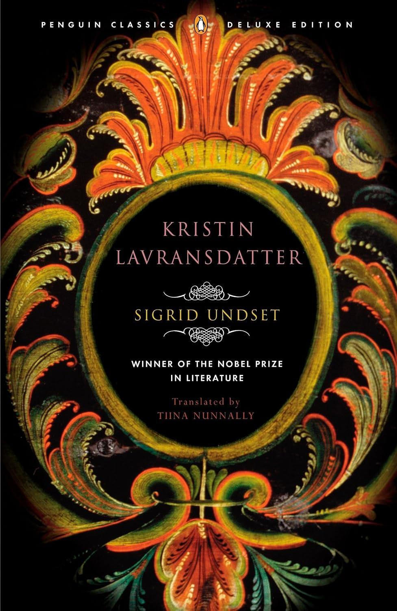
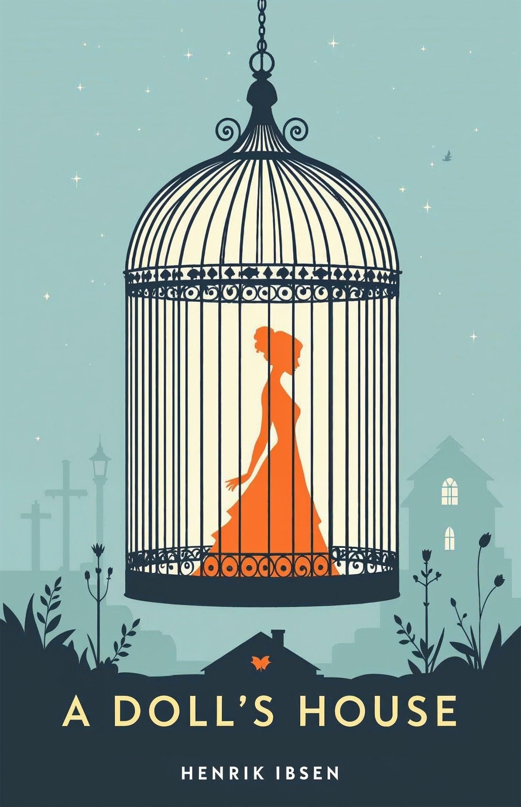

Kristin Lavransdatter é a obra mais famosa da escritora norueguesa Sigrid Undset, publicada originalmente em três volumes entre 1920 e 1922. A narrativa se passa na Noruega durante a Idade Média e acompanha a trajetória de Kristin, desde sua infância até a vida adulta. A personagem cresce em uma família tradicional, sob os cuidados de seu pai, Lavrans, e em uma sociedade marcada pela religião cristã, pelas tradições familiares e por regras sociais bastante rígidas.
Fome é um dos romances mais conhecidos do escritor norueguês Knut Hamsun, publicado originalmente em 1890. A narrativa acompanha um jovem escritor sem nome que vive em condições extremamente difíceis na cidade de Kristiania, atual Oslo, na Noruega. Sem emprego estável, dinheiro ou alimentação suficiente, o protagonista passa seus dias tentando escrever artigos e textos para conseguir algum dinheiro e continuar sobrevivendo. A história retrata a luta diária de alguém que deseja alcançar reconhecimento profissional, mas enfrenta constantemente a pobreza e a falta de oportunidades.

Casa de Bonecas é uma das obras mais importantes do dramaturgo norueguês Henrik Ibsen. Publicada em 1879, a peça apresenta a história de Nora Helmer, uma mulher que vive com seu marido, Torvald Helmer, e seus filhos. Inicialmente, a família parece levar uma vida tranquila e confortável, principalmente porque Torvald está prestes a assumir um cargo importante em um banco. Entretanto, por trás dessa aparência de felicidade, existem segredos, conflitos e problemas relacionados à liberdade e à posição da mulher na sociedade.